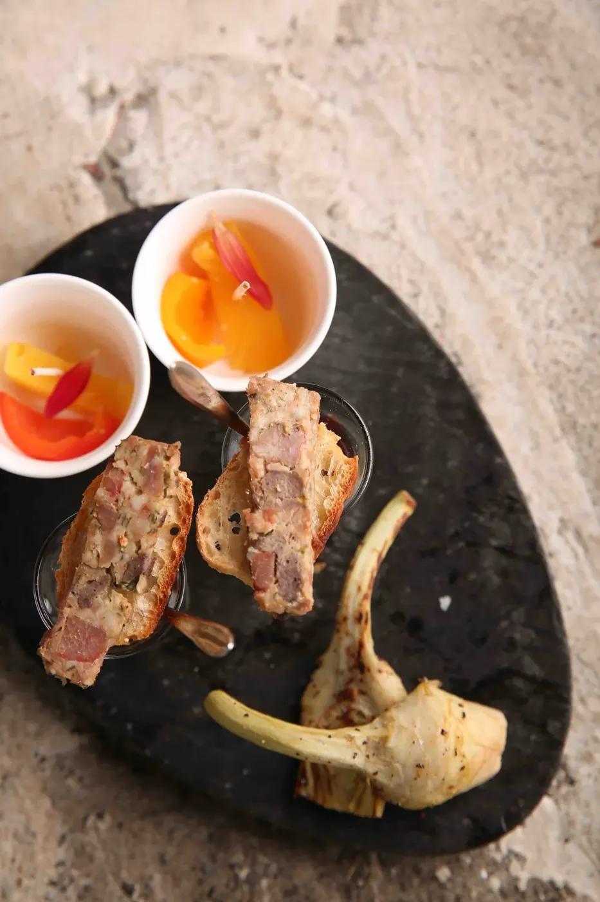
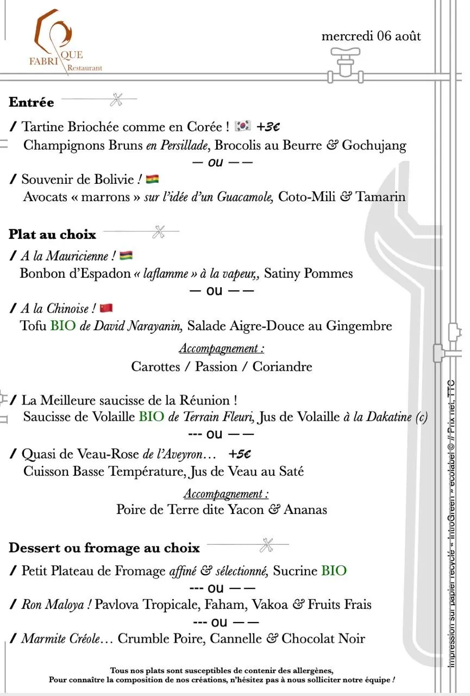
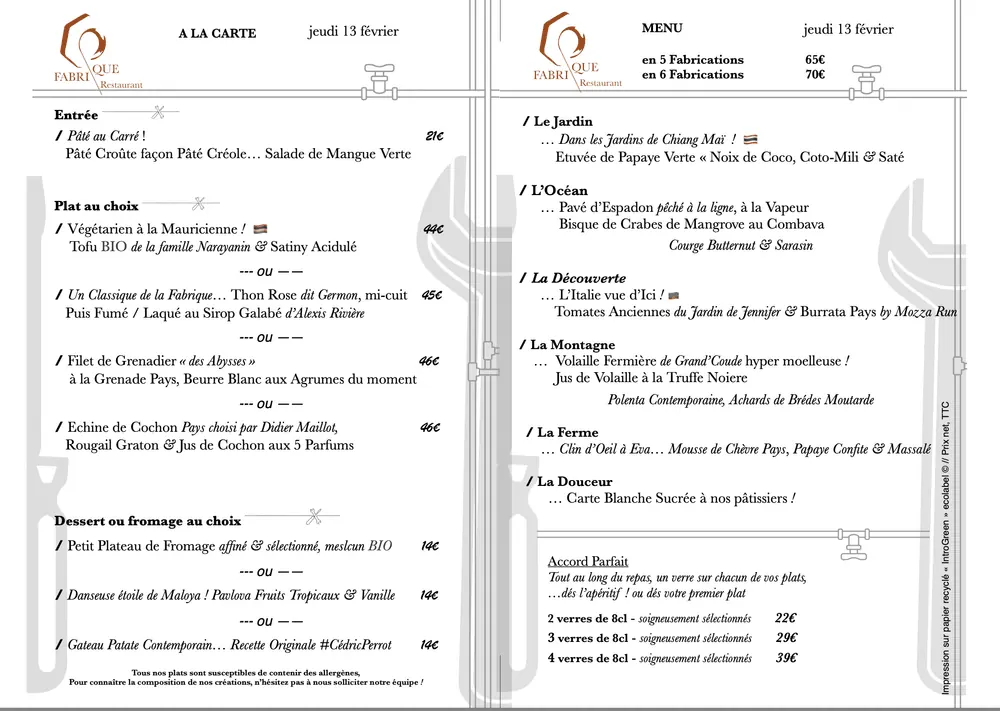

La carte
Manzé
Du mercredi au samedi, au déjeuner & au dîner. Jehan vous propose de le suivre à travers des menus élaborés sur l'instant, en fonction des retours du marché, des découvertes du moment et des produits de saison.
Au déjeuner
Les Fabriques du jour
Une formule quotidiennement renouvelée — Menu gourmand (au déjeuner uniquement).
- En 1 tempsPlat32 €
- En 2 temps(Entrée / Plat) ou (Plat / Fromage ou Dessert)38 €
- En 3 tempsEntrée / Plat / Fromage ou Dessert45 €
- En 4 tempsEntrée / Plat / Fromage / Dessert52 €
Au dîner
Menu Carte Blanche
Le temps d'un dîner, partons en bal(l)ade dans le terroir réunionnais… et laissez-vous guider.
- En 5 Fabrications2 Entrées / Plat Viande / Plat Poisson / Fromage ou Dessert65 €
- En 6 Fabrications2 Entrées / Plat Viande / Plat Poisson / Fromage / Dessert70 €
Accord Parfait
Un verre sur chacun de vos plats
Tout au long du repas, un verre sur chacun de vos plats… dès l'apéritif ! ou dès votre premier plat.
- 2 verres de 8 clsoigneusement sélectionnés22 €
- 3 verres de 8 clsoigneusement sélectionnés29 €
- 4 verres de 8 clsoigneusement sélectionnés39 €

Exemples
Nos menus en images
Les menus changent en fonction du marché. Voici un exemple de menu déjeuner et un exemple de menu au dîner.


Galerie
Déroulé d'un menu dégustation, le soir
Crédit photos : Jean-Philippe Bouchiat — jpbouchiat.com/culinaire (nouvelle fenêtre)
Prêt à vous régaler ?
La Fabrique vous accueille du mercredi au samedi — déjeuner de 12h00 à 14h30, dîner de 19h45 à 22h30.